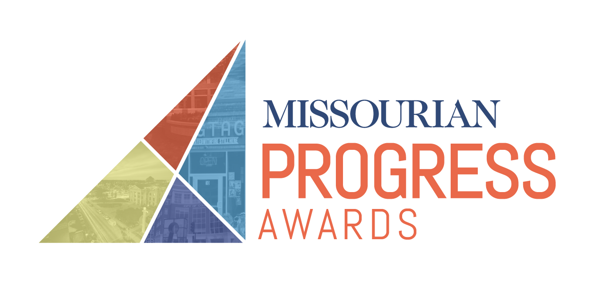
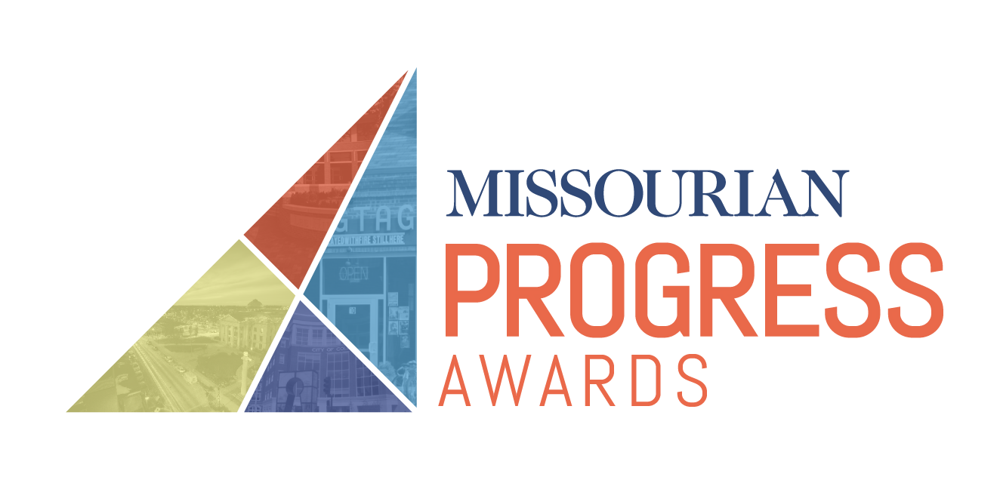

FREQUENTLY ASKED QUESTIONS
Q1: What are the Progress Awards?
The Progress Awards are a way to recognize people in the community of Columbia, Missouri who have
Q2: How long have the Progress Awards been around?
The Progress Awards were started in 2017. So far, there has been one round of winners.
Q3: Can I nominate people to win an award?
Yes, you can nominate anyone in Columbia to win one of the awards in any of the 10 categories.
Q4: What is the criteria for the winners?
The winners will be judged on...
Q5: When is the deadline to nominate?
For the 2018 Progress Awards, the deadline to nominate is ...
Content from advertiser?
Archived articles?
Missourian social media
Content copyright 2018 © Progress Awards.